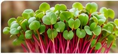

From Seed to Harvest
This page is structured around the accepted six-stage visual. Exact growing claims and methods can be updated to match A.T Microgreens' real process.

1
Seed Selection
Choose suitable seed for the intended crop.

2
Soaking & Sowing
Prepare and sow each variety appropriately.
3
Germination
Maintain the conditions required for germination.

4
Lit Growth
Move crops into the controlled growth phase.

5
Harvesting
Harvest at the correct stage for the variety.

6
Packing
Pack and label according to the confirmed food-safety process.
Clean Growing
Exact hygiene and growing claims to be confirmed before publishing.
Careful Handling
Space is reserved for the business's handling procedure.
Peak Freshness
Harvest timing can be described once the operational schedule is agreed.
Local Supply
Delivery radius and collection arrangements to be added.